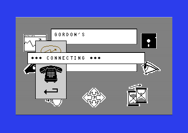
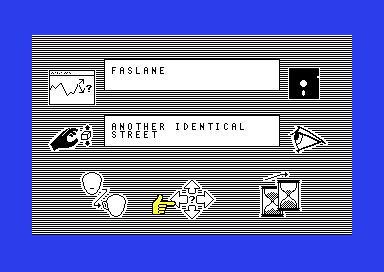
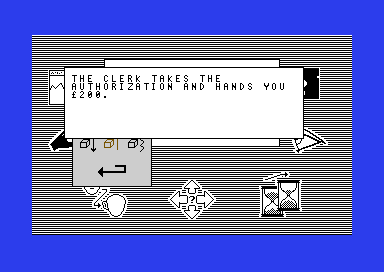
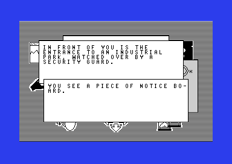
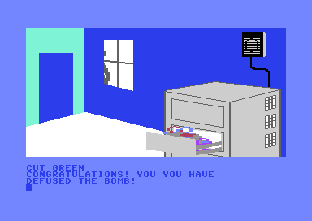
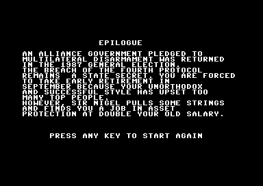
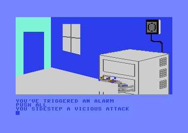
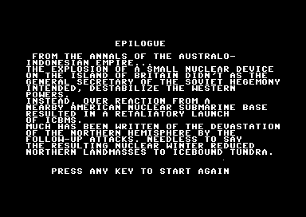
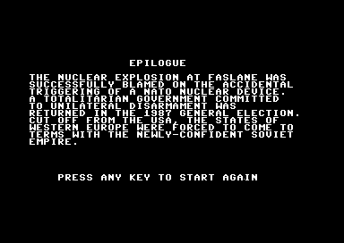

<meta charset="utf-8">
<meta name="viewport" content="width=device-width, initial-scale=1">
<title>The Fourth Protocol</title>
<link rel="preconnect" href="https://fonts.googleapis.com">
<link rel="stylesheet" href="https://fonts.googleapis.com/css2?family=Lato:wght@400;700;900&family=IBM+Plex+Mono:wght@400;500&display=swap">
<style>
:root{
  --bg:#23262d; --paper:#e9e7e1; --surface:#ffffff; --surface-2:#f1efea; --line:#d5d3cc; --line-soft:#e0ded8;
  --ink:#2f3136; --ink-soft:#55585f; --ink-mute:#80838a;
  --link:#1f5fa8; --link-hover:#154480; --accent:#1f5fa8;
  --amber:#c25a00; --cyan:#1f5fa8; --coral:#d04a3a; --green:#2a8a4a; --violet:#4a5bd6; --hl:#fff0c2;
  --chip:#2f3136; --chip-ink:#ffffff;
  --c64blue:#40318d; --c64grey:#686868;
  --fd:'Lato',system-ui,sans-serif; --fb:'Lato',system-ui,sans-serif; --fm:'IBM Plex Mono',ui-monospace,Menlo,monospace;
  --col:1080px; --gx:68px; --fs:17px; --lh:1.6; --hw:900; --h1:46px; --h2:26px; --sy:48px; --pp:26px; --r:10px;
  --plate-shadow:0 1px 2px rgba(0,0,0,.05),0 4px 14px rgba(0,0,0,.05);
}
*{box-sizing:border-box}
html{background:var(--bg);min-height:100%}
body{background:var(--paper);color:var(--ink);font-family:var(--fb);font-size:var(--fs);line-height:var(--lh);max-width:var(--col);margin:0 auto;min-height:100vh;padding:0 0 4rem}
h1,h2,h3{font-weight:var(--hw);letter-spacing:-.01em;text-wrap:balance;color:var(--ink);margin:0}
.wrap{padding:0 var(--gx)}
.hero{padding:48px var(--gx) 8px;text-align:left}
.eyebrow{font-family:var(--fm);font-size:12px;letter-spacing:.08em;text-transform:uppercase;color:var(--ink-mute);margin:0 0 10px}
.hero h1{font-size:var(--h1);line-height:1.15;letter-spacing:-.02em;margin:0 0 14px}
.hero .sub{margin:0 0 .6em;color:var(--ink-soft)}
section{padding:var(--sy) 0 24px}
section:last-of-type{border-bottom:none}
.fig{font-family:var(--fm);font-size:12px;letter-spacing:.08em;text-transform:uppercase;color:var(--ink-mute);margin:0 0 10px}
h2.t{font-size:var(--h2);margin-bottom:12px}
.lede{color:var(--ink-soft);margin:0 0 30px}
.plate{background:var(--surface);border:1px solid var(--line);border-radius:var(--r);padding:var(--pp);box-shadow:var(--plate-shadow)}
.cap{font-size:14px;color:var(--ink-mute);margin-top:14px;line-height:1.55}
.cap b{color:var(--ink);font-weight:700}
code{font-family:var(--fm);font-size:.82em;background:var(--chip);color:var(--chip-ink);border-radius:4px;padding:2px 6px;overflow-wrap:break-word;-webkit-box-decoration-break:clone;box-decoration-break:clone}

h3.tfp-h{font-size:19px;margin:28px 0 8px}
.tfp-pics{display:grid;grid-template-columns:repeat(2,minmax(0,1fr));gap:14px}
.tfp-pics figure{margin:0}
.tfp-pics img{display:block;width:100%;height:auto;image-rendering:pixelated;border-radius:4px}
.tfp-pics figcaption{font-size:13px;color:var(--ink-mute);margin-top:6px;line-height:1.45}
.tfp-cv{display:block;width:100%;height:auto;image-rendering:pixelated;background:#000;border-radius:4px}
.tfp-stack{position:relative}
.tfp-stack canvas+canvas{position:absolute;left:0;top:0;width:100%;height:100%;background:transparent;pointer-events:none}
.tfp-bar{display:flex;flex-wrap:wrap;gap:8px;margin:0 0 14px;align-items:center}
.tfp-btn{font:inherit;font-family:var(--fm);font-size:12.5px;background:var(--surface);border:1px solid var(--line);border-radius:6px;padding:5px 11px;color:var(--ink);cursor:pointer;line-height:1.3}
.tfp-btn:hover{border-color:var(--ink-mute)}
.tfp-btn[aria-pressed="true"]{background:var(--accent);border-color:var(--accent);color:#fff}
.tfp-out{font-size:15px;color:var(--ink);margin:12px 0 0;min-height:3em;line-height:1.55}
.tfp-tbl{border-collapse:collapse;font-size:14px;width:100%;margin:4px 0 0}
.tfp-tbl th,.tfp-tbl td{text-align:left;vertical-align:top;padding:5px 8px;border-bottom:1px solid var(--line-soft)}
.tfp-tbl th{font-weight:700;color:var(--ink-soft)}
.tfp-tbl td.tfp-n{font-family:var(--fm);font-size:13px;white-space:nowrap}
.tfp-tbl tr.tfp-on td{background:var(--hl)}
.tfp-wide{overflow-x:auto}
.tfp-grid{display:grid;grid-template-columns:repeat(auto-fill,minmax(46px,1fr));gap:4px}
.tfp-grid button{font-family:var(--fm);font-size:12px;border:1px solid var(--line);border-radius:5px;padding:5px 0;cursor:pointer;background:var(--surface)}
.tfp-grid button.tfp-zero{background:#f6d8d3;border-color:#e2a99f}
.tfp-grid button.tfp-dead{background:#f7e3bf;border-color:#e0bd7c}
.tfp-grid button[aria-pressed="true"]{outline:2px solid var(--accent);outline-offset:1px}
.tfp-key{display:flex;flex-wrap:wrap;gap:14px;font-size:13px;color:var(--ink-soft);margin:10px 0 0}
.tfp-key i{display:inline-block;width:12px;height:12px;border-radius:3px;border:1px solid var(--line);vertical-align:-1px;margin-right:5px}
.tfp-pick{display:flex;flex-wrap:wrap;gap:8px;align-items:center;margin:0 0 12px}
.tfp-pick select{font:inherit;font-size:14px;padding:4px 6px;border:1px solid var(--line);border-radius:6px;background:var(--surface);max-width:100%}
.tfp-memo{background:#000;border-radius:4px;padding:10px;overflow-x:auto}
.tfp-memo canvas{display:block;image-rendering:pixelated;margin:0 auto}
.tfp-codes{font-family:var(--fm);font-size:12.5px;line-height:1.9;margin:12px 0 0;word-break:break-word}
.tfp-codes span{display:inline-block;border:1px solid var(--line);border-radius:4px;padding:0 5px;margin:0 3px 3px 0;background:var(--surface-2)}
.tfp-codes span b{font-weight:500;color:var(--ink-mute);margin-right:4px}
.tfp-icons{display:grid;grid-template-columns:repeat(auto-fill,minmax(120px,1fr));gap:12px}
.tfp-icons figure{margin:0;text-align:center}
.tfp-icons canvas{display:block;margin:0 auto 4px;image-rendering:pixelated;background:#000;border-radius:3px;max-width:100%}
.tfp-icons figcaption{font-size:12px;color:var(--ink-mute);line-height:1.35}
.tfp-line{font-family:var(--fm);font-size:15px;width:100%;padding:8px 10px;border:1px solid var(--line);border-radius:6px;text-transform:uppercase;background:#40318d;color:#a5a5ff}
.tfp-chips{display:flex;flex-wrap:wrap;gap:6px;margin:10px 0 0}
.tfp-chips button{font-family:var(--fm);font-size:12px;border:1px solid var(--line);border-radius:5px;padding:3px 8px;cursor:pointer;background:var(--surface-2)}
.tfp-parse{font-family:var(--fm);font-size:13.5px;line-height:1.7;margin:12px 0 0;min-height:5em}
.tfp-parse .tfp-hit{background:var(--hl);border-radius:3px}
@media (max-width:640px){ .tfp-pics{grid-template-columns:minmax(0,1fr)} :root{--gx:16px;--pp:14px} }
</style>
<!-- tabs -->
<header class="hero">
  <p class="eyebrow">1985 · Hutchinson Computer Publishing (UK); Bantam Software (US)</p>
  <h1>The Fourth Protocol</h1>
  <p class="sub">A dying spy's last word stops the computer when you dial it. A London cab takes you to the estate where the bomb is hidden when you say BOMB, and a break-in written into episode one can never happen.</p>
</header>
<main class="wrap">

<section data-part="the-bomb">
  <p class="fig">01 · Episode two</p>
  <h2 class="t">Bug: SVETOFOR on the telephone stops the machine</h2>
  <p class="lede">In episode one, Pasternak gasps the word SVETOFOR as he dies. Dial it as a telephone number in episode two and the computer freezes.</p>
  <div class="plate"><div class="tfp-pics">
    <figure><figcaption>SVETOFOR dialled from your office: the screen stays at *** CONNECTING *** for good.</figcaption></figure>
  </div><p class="cap">In the emulator, VICE v3.14.0, from your new office. After SVETOFOR the processor had stopped on a <code>$D2</code> byte at <code>$46C2</code>. That byte is not an instruction, and it halts the Commodore's processor, the 6510, until the machine is reset.</p></div>
  <p>The telephone (<code>telephone</code>, <code>$81B7</code>) asks NUMBER? and looks the answer up as a word of the game's vocabulary, where each word has a number, its token. Five telephone numbers answer, each with a routine in <code>phone_numbers</code> (<code>$8231</code>): Glasgow, Dover, Special Branch, and the harbours of Bristol and Harwich. The game finds the routine from the token less <code>$17</code>. Its check lets through anything below <code>$1C</code>, which is 28 values for five numbers. The 23 words after the numbers in the vocabulary, tokens <code>$1C</code> to <code>$32</code>, each take an address from the bytes past the table's end.</p>
  <p>PAPER happens to land on <code>unobtainable</code> and says NUMBER UNOBTAINABLE, which looks deliberate. SVETOFOR lands on <span data-part=""><code>$D040</code></span>, among the video chip's registers, and the processor runs on through bytes that were never code until it hits one that stops it.</p>
</section>

<section data-part="the-bomb">
  <p class="fig">02 · Episode two</p>
  <h2 class="t">Secret: A taxi straight to the bomb</h2>
  <p class="lede">Hail a cab in London, say BOMB, and for £5 the driver takes you to the housing estate at Faslane where the bomb is hidden.</p>
  <div class="plate"><div class="tfp-pics">
    <figure><figcaption>From Gordon Street to FASLANE: ANOTHER IDENTICAL STREET, location 200.</figcaption></figure>
  </div><p class="cap">In VICE v3.14.0: from Gordon Street with the wallet carried, MOVE, TAXI until a cab stopped, then BOMB. The money went from £50 to £45.</p></div>
  <p>The taxi (<code>taxi</code>, <code>$7BAF</code>) runs anywhere in London but the Barbican, and a cab stops one time in four (25 in 99). WHERE TO? takes a word, and the 18 words with tokens 0 to <code>$11</code> are destinations (<code>taxi_destinations</code>, <code>$7C6F</code>): HOUSES, PARLIAMENT, GORDON, EUSTON, PADDINGTON, HEATHROW and the rest. The last of them is BOMB, which leads to location 200, a street on the estate (the estate's map is on the <a href="the-bomb.html#estate">Maps tab</a>). The story's own way there is a long chase: a bug planted on Winkler, his taxi down the M4 and a train to Glasgow. The cab skips all of it.</p>
</section>

<section data-part="nato-documents" id="tfp-breakin">
  <p class="fig">03 · Episode one</p>
  <h2 class="t">Bug: The break-in that never happens</h2>
  <p class="lede">Lock Building 17 badly and the game is meant to pick one of two memos: a break-in once in 99 times, a serious breach otherwise. It always picks the breach.</p>
  <div class="plate"><div class="tfp-wide"><table class="tfp-tbl">
    <tr><th>Address</th><th>Instruction</th><th>What it does</th></tr>
    <tr><td class="tfp-n"><code>$7CB1</code></td><td class="tfp-n">LDA #$01 · JSR random</td><td>A number from 0 to 98 in A</td></tr>
    <tr><td class="tfp-n"><code>$639E</code></td><td class="tfp-n">AND #$7F · CMP #$63 · BCS · RTS</td><td>Inside <code>random</code>: a number of <code>$63</code> or more is thrown away, so it returns after a CMP that found A below <code>$63</code>, with the Z flag clear</td></tr>
    <tr><td class="tfp-n"><code>$7CB6</code></td><td class="tfp-n">BNE b_7CBF</td><td>Tests that Z flag, not the number: always taken</td></tr>
    <tr><td class="tfp-n"><code>$7CB8</code></td><td class="tfp-n">JSR schedule_in</td><td>Memo 31, the break-in: never reached</td></tr>
    <tr><td class="tfp-n"><code>$7CBF</code></td><td class="tfp-n">JSR schedule_in</td><td>Memo 32, the serious breach</td></tr>
  </table></div><p class="cap">In VICE v3.14.0, with <code>random</code>'s state at <code>$88</code>-<code>$8A</code> set so that its next number is 0 and the failing branch of <code>judge_security</code> run from <code>$7CAC</code>: <code>random</code> returned 0 with the Z flag clear, and the game went on to memo 32. Run on a model of the processor from 2,999 other states, it went to memo 32 every time.</p></div>
  <p>A 6502 branch tests the processor's flags, single bits that record what the last calculation gave; the Z flag says whether it gave zero. The flags come from the last instruction that set them. <code>judge_security</code> calls <code>random</code> and branches straight away, as if the number had just been loaded. Inside <code>random</code> the last instruction to touch Z is a comparison with 99, made only to throw out numbers that are too big, and it never finds them equal. So memo 31, A BREAKIN AT BUILDING 17. AN INTRUDER GOT AWAY WITH MONEY STOLEN FROM STAFF, is in the game and no player ever reads it. <a href="nato-documents.html#building-17">Episode 1</a> lets you try the locks.</p>
</section>

<section data-part="the-bomb">
  <p class="fig">04 · Episode two</p>
  <h2 class="t">Bug: £200 from the Treasury leaves you with £4</h2>
  <p class="lede">Your money is a single byte, a number from 0 to 255, so it cannot go past £255. The clerk who cashes the Treasury's authorization takes you past it, and the count starts again from 0.</p>
  <div class="plate"><div class="tfp-pics">
    <figure><figcaption>THE CLERK TAKES THE AUTHORIZATION AND HANDS YOU £200.</figcaption></figure>
  </div><p class="cap">In VICE v3.14.0, at the accounts office (location 91) with the authorization carried and £60: afterwards <code>money</code> held 4.</p></div>
  <p><code>money</code> (<code>$404F</code>) starts at 50, and fares, tickets and the florist take from it (<code>pay</code>, <code>$A7E7</code>). <code>use_authorization</code> adds 200 with no check, so anything over £55 in your wallet wraps round: £60 becomes £4. With too little money left, the next fare you cannot pay ends the game.</p>
</section>

<section data-part="the-bomb">
  <p class="fig">05 · Episode two</p>
  <h2 class="t">Bug: A piece of notice board</h2>
  <p class="lede">At the gate of the Faslane estate, LOOK AROUND says YOU SEE A PIECE OF NOTICE BOARD.</p>
  <div class="plate"><div class="tfp-pics">
    <figure><figcaption>The estate's gate, location 213.</figcaption></figure>
  </div><p class="cap">In VICE v3.14.0, LOOK, then LOOK AROUND at the gate.</p></div>
  <p>Each of the 48 objects has an article: A, AN, SOME or A PIECE OF, numbered 0 to 3 (<code>object_articles</code>, <code>$7CD8</code>). The table has 47 bytes. The notice board is object 47, the 48th, so it reads the byte after the table, the first byte of <code>object_names</code>, <code>$67</code>. <code>print_article</code> (<code>$4B15</code>) prints A PIECE OF for anything above 2.</p>
</section>

<section data-part="sas-assault">
  <p class="fig">06 · Episode three</p>
  <h2 class="t">Bug: YOU YOU HAVE DEFUSED THE BOMB!</h2>
  <p class="lede">The line every player of episode three is working towards says "you" twice.</p>
  <div class="plate"><div class="tfp-pics">
    <figure><figcaption>The third wire cut.</figcaption></figure>
    <figure><figcaption>The epilogue that follows it.</figcaption></figure>
  </div><p class="cap">In VICE v3.14.0, from the start of play: USE SECOND, 12051987, CUT CABLE, PUSH RED, PUSH YELLOW, PUSH GREEN, CUT RED, CUT YELLOW, CUT GREEN.</p></div>
  <p>The doubled word is in the message itself, number 110 in <code>message_table</code> (<code>$1000</code>), and <code>cut_red</code> (<code>$B54E</code>) prints it when the third wire, GREEN, is cut in turn.</p>
</section>

<section data-part="sas-assault">
  <p class="fig">07 · Episode three</p>
  <h2 class="t">Bug: PUSH ALL prints the wrong message</h2>
  <p class="lede">Once the bomb has been found, PUSH ALL says YOU SIDESTEP A VICIOUS ATTACK, and the bomb goes off.</p>
  <div class="plate"><div class="tfp-pics">
    <figure><figcaption>No guard is in the room.</figcaption></figure>
  </div><p class="cap">In VICE v3.14.0, from the start of play: USE SECOND, 12051987, PUSH ALL.</p></div>
  <p><code>push_all</code> (<code>$B503</code>) prints message 170, one of the four lines for an attack you evade (<code>evade_messages</code>). Message 160, which nothing prints, reads OK - PUSHING ALL THE BUTTONS AT ONCE. It is one digit away, and probably the line this command was meant to give before the explosion.</p>
</section>

<section data-part="sas-assault">
  <p class="fig">08 · Episode three</p>
  <h2 class="t">Secret: CUT BOX cuts the yellow wire</h2>
  <p class="lede">With the timer showing, CUT RED, CUT BOX, CUT GREEN defuses the bomb.</p>
  <p>Each verb has a table of 28 routines, one for each noun (<code>noun_tables</code>). In CUT's table (<code>cut_nouns</code>, <code>$B226</code>) the entry for BOX is the yellow wire's, <code>$B551</code>, a byte inside the <code>BIT</code> instruction at <code>$B550</code> that <code>cut_red</code> uses to start the yellow cut with A = 2. In VICE v3.14.0, CUT RED, CUT BOX and CUT GREEN with the timer showing counted the wires 1, 2 and 3, and the bomb was defused.</p>
</section>

<section data-part="sas-assault">
  <p class="fig">09 · Episode three</p>
  <h2 class="t">Secret: The ending depends on whether you typed an odd or even number of lines</h2>
  <p class="lede">If the bomb goes off, the epilogue you get depends only on how many lines you had typed, empty ones included. The 144th line sets it off whatever you do.</p>
  <div class="plate"><div class="tfp-pics">
    <figure><figcaption>An odd count: the annals of the Australo-Indonesian empire.</figcaption></figure>
    <figure><figcaption>An even count: the blast blamed on NATO.</figcaption></figure>
  </div><p class="cap">In VICE v3.14.0: an empty line, USE FIRST and 12051987 set the bomb off on the third line, with the first epilogue; <code>commands_typed</code> set to 143 and an empty line gave A CLICK ISSUES FROM WITHIN THE CABINET and the second.</p></div>
  <p><code>commands_typed</code> (<code>$879A</code>) counts every line. <code>check_turn</code> (<code>$B62F</code>) sets the bomb off when it reaches 144, and <code>bomb_explodes</code> (<code>$A2F0</code>) picks the epilogue from the count's lowest bit. Since 144 is even, running out of time always gives the epilogue in which the blast at Faslane is blamed on NATO's own bomb.</p>
</section>

<section data-part="sas-assault">
  <p class="fig">10 · Episode three</p>
  <h2 class="t">Secret: The submachine gun the manual promises</h2>
  <p class="lede">The manual gives Preston a submachine gun. Episode three has a whole shoot-out written for it, and no way in.</p>
  <p><code>shootout</code> (<code>$A7D1</code>) puts a cross-hair (sprite 0) on the room, moved by the cursor keys or a joystick in port 2 and fired with the joystick's button or the Commodore key, with 192 rounds (<code>ammunition</code>). A guard walking past the window can be shot; three hits on the alarm box silence it; 48 hits on the cabinet end the game. Its sprites, the cross-hair and the bursts, are in the file, and so are four messages about the gun, numbers 124 to 127, that nothing prints. The only way into it is a <code>JMP</code> at <code>$A006</code>, and nothing jumps there.</p>
</section>

<section data-part="nato-documents">
  <p class="fig">11 · Episode one</p>
  <h2 class="t">Secret: The voice prints that match are the same scribble</h2>
  <p class="lede">The voice analysis shows the unknown caller's voice print and lets you compare it with a suspect's. Neither is recorded anywhere.</p>
  <p>Each print is a jagged line drawn by <code>draw_line_graph</code> (<code>$4602</code>) from a random generator started from a number chosen for that voice, its seed (<code>seed_random</code>, <code>voice_seeds</code> at <code>$464B</code>). The same seed always gives the same line. The unknown voice uses seed 0, and so does STIG NILSON's, so his print is the same scribble and that is the match. Only the first twelve people have a voice on file.</p>
</section>

<section data-part="nato-documents">
  <p class="fig">12 · Episode one</p>
  <h2 class="t">Bug: Watchers on a new name never see anything</h2>
  <p class="lede">You can put watchers on any surname you type, but on a name the game does not know they never report a thing.</p>
  <p>The game knows 16 targets, each with a day from which its watchers can find something (<code>target_day</code>, <code>$5DAB</code>). A surname it does not know becomes one of 16 new targets (<code>new_target</code>, <code>$52C1</code>), and their day is 99. The game lasts 40 days, so the day never comes, and the watchers you spend on them are spent for nothing.</p>
</section>

<section data-part="">
  <p class="fig">13 · The code words</p>
  <h2 class="t">Secret: The code words</h2>
  <p class="lede">The words and numbers the episodes ask for, as the code checks them.</p>
  <div class="plate tfp-wide"><table class="tfp-tbl">
    <tr><th>Type</th><th>Where</th><th>What it does</th></tr>
    <tr><td class="tfp-n">TIPTREE</td><td>Episode three, the first screen</td><td>Starts play. Any line that begins with TIPTREE will do (<code>check_codename</code>, <a href="source-sas-assault.html#C0FF"><code>$C0FF</code></a>), so episode three can be played from the menu without the other two.</td></tr>
    <tr><td class="tfp-n">12051987</td><td>Episode three, after USE SECOND</td><td>Opens the drawer with the bomb (<code>type_number</code>, <a href="source-sas-assault.html#B298"><code>$B298</code></a>).</td></tr>
    <tr><td class="tfp-n">ASPEN</td><td>Episode two, the lift at Gordon's</td><td>The only way from your floor to the street (<code>lift</code>, <a href="source-the-bomb.html#496C"><code>$496C</code></a>).</td></tr>
    <tr><td class="tfp-n">42431282, or EPC</td><td>Episode two, the lift at Sentinel House</td><td>Either works (<code>lift</code>).</td></tr>
    <tr><td class="tfp-n">BOMB</td><td>Episode two, a taxi in London</td><td>Goes to location 200, a street on the Faslane estate, where the bomb is hidden.</td></tr>
    <tr><td class="tfp-n">12377563</td><td>Episode one, MAKE A CALL</td><td>Sir Anthony Plumb, who asks the six questions that can win the episode (<code>plumb_questions</code>, <a href="source-nato-documents.html#501B"><code>$501B</code></a>).</td></tr>
  </table></div>
</section>

</main>
<footer style="margin:16px 0 0;padding:22px var(--gx) 0;border-top:1px solid #e0ded8;font-family:'IBM Plex Mono',ui-monospace,Menlo,monospace;font-size:12px;color:#80838a"><a href="https://github.com/gamesexplained/gamesexplained" style="color:#1f5fa8;text-decoration:none">GitHub</a> · <a href="https://discord.gg/3V9GWyRDWV" style="color:#1f5fa8;text-decoration:none">Discord</a><br>© Games Explained contributors. Write-ups, facts and symbol maps are available under <a href="https://creativecommons.org/licenses/by-sa/4.0/" style="color:#1f5fa8;text-decoration:none">CC BY-SA 4.0</a>; code under <a href="https://opensource.org/licenses/MIT" style="color:#1f5fa8;text-decoration:none">MIT</a></footer>
